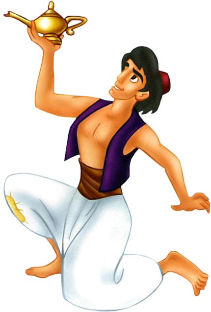

About Me

The purpose of a portfolio is to help students to document their skills and achievements, to challenge students to create their best work, and to help students to reflect on what they have accomplished. The Online Skills Portfolio is an online.portfolio that allows students
to display a wide variety of products, including documents, presentations, spreadsheets, photos and artwork. For each portfolio
product, students write a brief description and complete a skills checklist which helps students to reflect on each item.